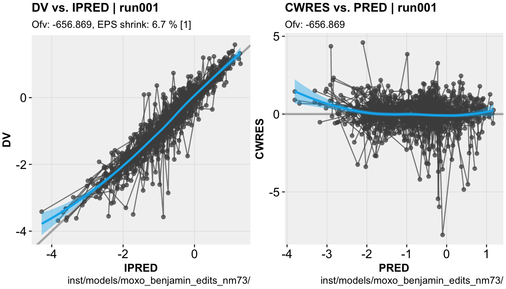

Overview
ggxpose was designed as a ggplot2-based alternative to xpose4. ggxpose aims to reduce the post processing burden and improve diagnostics commonly associated the development of non-linear mixed effect models.
Installation
Install the development version from github
# install.packages('devtools')
devtools::install_github('guiastrennec/ggxpose')Getting started
Load ggxpose
library(ggxpose)Import run output
xpdb <- xpose_data(runno = '001')Generate diagnostics
# DV vs. IPRED plot
dv_vs_ipred(xpdb)
# CWRES vs. PRED plot
cwres_vs_pred(xpdb)
Recommended reading
The ggxpose website contains several useful articles to make full use of ggxpose
When working with ggxpose, a working knowledge of ggplot2 is recommended. Help for ggplot2 can be found in:
- The ggplot2 documentation
- The ggplot2 mailing list
- Internet resources (stack overflow, etc.)